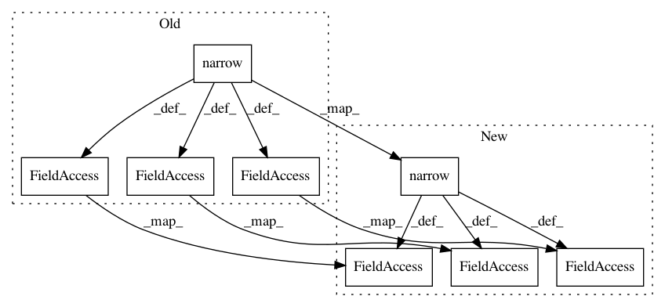

977e38de2e77d46b36ace96b4c76910174f77ad7,models/face_shift_net/face_shiftnet_model.py,FaceShiftNetModel,set_input,#FaceShiftNetModel#Any#,127
Before Change
real_A_flip = input["A_F"].to(self.device)
// directly load mask offline
self.mask_global = input["M"].to(self.device).byte()
self.mask_global = self.mask_global.narrow(1,0,1)
// create mask online
if not self.opt.offline_loading_mask:
if self.opt.mask_type == "center":
self.mask_global.zero_()
self.mask_global[:, :, int(self.opt.fineSize/4) + self.opt.overlap : int(self.opt.fineSize/2) + int(self.opt.fineSize/4) - self.opt.overlap,\
int(self.opt.fineSize/4) + self.opt.overlap: int(self.opt.fineSize/2) + int(self.opt.fineSize/4) - self.opt.overlap] = 1
self.rand_t, self.rand_l = int(self.opt.fineSize/4) + self.opt.overlap, int(self.opt.fineSize/4) + self.opt.overlap
elif self.opt.mask_type == "random":
self.mask_global = self.create_random_mask().type_as(self.mask_global).view(1, *self.mask_global.size()[-3:])
// As generating random masks online are computation-heavy
// So just generate one ranodm mask for a batch images.
self.mask_global = self.mask_global.expand(self.opt.batchSize, *self.mask_global.size()[-3:])
else:
raise ValueError("Mask_type [%s] not recognized." % self.opt.mask_type)
// For loading mask offline, we also need to change "opt.mask_type" and "opt.mask_sub_type"
// to avoid forgetting such settings.
else:
self.opt.mask_type = "random"
self.opt.mask_sub_type = "island"
self.set_latent_mask(self.mask_global)
real_A.narrow(1,0,1).masked_fill_(self.mask_global, 0.)/ǘ*123.0/255.0 - 1.0
real_A.narrow(1,1,1).masked_fill_(self.mask_global, 0.)/ǘ*104.0/255.0 - 1.0
real_A.narrow(1,2,1).masked_fill_(self.mask_global, 0.)/ǘ*117.0/255.0 - 1.0
self.mask_global_flip = torch.flip(self.mask_global.float(), [3]).byte()
real_A_flip.narrow(1,0,1).masked_fill_(self.mask_global_flip, 0.)/ǘ*123.0/255.0 - 1.0
real_A_flip.narrow(1,1,1).masked_fill_(self.mask_global_flip, 0.)/ǘ*104.0/255.0 - 1.0
real_A_flip.narrow(1,2,1).masked_fill_(self.mask_global_flip, 0.)/ǘ*117.0/255.0 - 1.0
if self.opt.add_mask2input:
// make it 4 dimensions.
// Mention: the extra dim, the masked part is filled with 0, non-mask part is filled with 1.
real_A = torch.cat((real_A, (1 - self.mask_global).expand(real_A.size(0), 1, real_A.size(2), real_A.size(3)).type_as(real_A)), dim=1)
real_A_flip = torch.cat((real_A_flip, (1 - self.mask_global_flip).expand(real_A_flip.size(0), 1, real_A.size(2), real_A.size(3)).type_as(real_A)), dim=1)
self.real_A = real_A
self.real_B = real_B
self.real_A_flip = real_A_flip
After Change
real_A_flip = input["A_F"].to(self.device)
// directly load mask offline
self.mask_global = input["M"].to(self.device).byte()
self.mask_global = self.mask_global.narrow(1,0,1).bool()
// create mask online
if not self.opt.offline_loading_mask:
if self.opt.mask_type == "center":
self.mask_global.zero_()
self.mask_global[:, :, int(self.opt.fineSize/4) + self.opt.overlap : int(self.opt.fineSize/2) + int(self.opt.fineSize/4) - self.opt.overlap,\
int(self.opt.fineSize/4) + self.opt.overlap: int(self.opt.fineSize/2) + int(self.opt.fineSize/4) - self.opt.overlap] = 1
self.rand_t, self.rand_l = int(self.opt.fineSize/4) + self.opt.overlap, int(self.opt.fineSize/4) + self.opt.overlap
elif self.opt.mask_type == "random":
self.mask_global = self.create_random_mask().type_as(self.mask_global).view(1, *self.mask_global.size()[-3:])
// As generating random masks online are computation-heavy
// So just generate one ranodm mask for a batch images.
self.mask_global = self.mask_global.expand(self.opt.batchSize, *self.mask_global.size()[-3:])
else:
raise ValueError("Mask_type [%s] not recognized." % self.opt.mask_type)
// For loading mask offline, we also need to change "opt.mask_type" and "opt.mask_sub_type"
// to avoid forgetting such settings.
else:
self.opt.mask_type = "random"
self.opt.mask_sub_type = "island"
self.set_latent_mask(self.mask_global)
real_A.narrow(1,0,1).masked_fill_(self.mask_global, 0.)/ǘ*123.0/255.0 - 1.0
real_A.narrow(1,1,1).masked_fill_(self.mask_global, 0.)/ǘ*104.0/255.0 - 1.0
real_A.narrow(1,2,1).masked_fill_(self.mask_global, 0.)/ǘ*117.0/255.0 - 1.0
self.mask_global_flip = torch.flip(self.mask_global.float(), [3]).bool()
real_A_flip.narrow(1,0,1).masked_fill_(self.mask_global_flip, 0.)/ǘ*123.0/255.0 - 1.0
real_A_flip.narrow(1,1,1).masked_fill_(self.mask_global_flip, 0.)/ǘ*104.0/255.0 - 1.0
real_A_flip.narrow(1,2,1).masked_fill_(self.mask_global_flip, 0.)/ǘ*117.0/255.0 - 1.0
if self.opt.add_mask2input:
// make it 4 dimensions.
// Mention: the extra dim, the masked part is filled with 0, non-mask part is filled with 1.
real_A = torch.cat((real_A, (~self.mask_global).expand(real_A.size(0), 1, real_A.size(2), real_A.size(3)).type_as(real_A)), dim=1)
real_A_flip = torch.cat((real_A_flip, (~self.mask_global_flip).expand(real_A_flip.size(0), 1, real_A.size(2), real_A.size(3)).type_as(real_A)), dim=1)
self.real_A = real_A
self.real_B = real_B
self.real_A_flip = real_A_flip
In pattern: SUPERPATTERN
Frequency: 3
Non-data size: 8
Instances
Project Name: Zhaoyi-Yan/Shift-Net_pytorch
Commit Name: 977e38de2e77d46b36ace96b4c76910174f77ad7
Time: 2020-06-14
Author: yanzhaoyi@outlook.com
File Name: models/face_shift_net/face_shiftnet_model.py
Class Name: FaceShiftNetModel
Method Name: set_input
Project Name: Zhaoyi-Yan/Shift-Net_pytorch
Commit Name: 8f6a6f153781d0908fb0904349aae844494026ea
Time: 2018-12-03
Author: yanzhaoyi@outlook.com
File Name: models/InnerCos.py
Class Name: InnerCos
Method Name: forward
Project Name: Zhaoyi-Yan/Shift-Net_pytorch
Commit Name: 6e05dab8f8a3c8bc8d1df558f43161ae5c01e381
Time: 2019-12-20
Author: yanzhaoyi@outlook.com
File Name: models/shift_net/shiftnet_model.py
Class Name: ShiftNetModel
Method Name: set_input